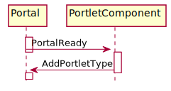
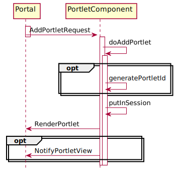
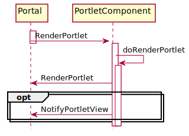

- java.lang.Object
-
- org.jgrapes.core.internal.ComponentVertex
-
- org.jgrapes.core.Component
-
- org.jgrapes.portal.AbstractPortlet
-
- All Implemented Interfaces:
- Iterable<org.jgrapes.core.ComponentType>, org.jgrapes.core.Channel, org.jgrapes.core.ComponentType, org.jgrapes.core.Eligible, org.jgrapes.core.Manager
- Direct Known Subclasses:
- FreeMarkerPortlet
public abstract class AbstractPortlet extends org.jgrapes.core.Component
Provides a base class for implementing portlet components. In addition to translating events to invocations of abstract methods, this class manages the state information of a portlet instance.
Event handling
The following diagrams show the events exchanged between the
Portaland a portlet from the portlet’s perspective. If applicable, they also show how the events are translated by theAbstractPortletto invocations of the abstract methods that have to be implemented by the derived class (the portlet component that provides a specific portlet type).PortalReady

From the portal page point of view, a portlet consists of CSS and JavaScript that is added to the portal page by
AddPortletTypeevents and HTML that is provided byRenderPortletevents (see below). These events must therefore be generated by a portlet component. With respect to the firing of the initialAddPortletType, theAbstractPortletdoes not provide any support. The handler for thePortalReadymust be implemented by the derived class itself.AddPortletRequest

The
AddPortletRequestindicates that a new portlet instance of a given type should be added to the page. TheAbstractPortletchecks the type requested, and if it matches, invokesdoAddPortlet. The derived class generates a new unique portlet id (optionally usinggeneratePortletId) and a state (model) for the instance. The derived class callsputInSessionto make the state known to theAbstractPortlet. Eventually, it fires theRenderPortletevent and returns the new portlet id. TheRenderPortletevent delivers the HTML that represents the portlet on the page to the portal session. The portlet state may be used to generate HTML that represents the state. Alternatively, state independent HTML may be delivered followed by aNotifyPortletViewevent that updates the HTML using JavaScript in the portal page.RenderPortlet

A
RenderPortletevent indicates that the portal page needs the HTML for displaying a portlet. This may be cause by e.g. a refresh or by requesting a full page view from the preview.Upon receiving such an event, the
AbstractPortletchecks if it has state information for the portlet id requested. If so, it invokesdoRenderPortletwith the state information. This method has to fire theRenderPortletevent that delivers the HTML.DeletePortletRequest

When the
AbstractPortletreceives aDeletePortletRequest, it checks if state information for the portlet id exists. If so, it deletes the state information from the session and invokesdoDeletePortlet(DeletePortletRequest, PortalSession, String, Serializable)with the state information. This method fires theDeletePortletevent that confirms the deletion of the portlet.NotifyPortletModel

If the portlet display includes input elements, actions on these elements may result in
NotifyPortletModelevents from the portal page to the portal. When theAbstractPortletreceives such events, it checks if state information for the portlet id exists. If so, it invokesdoNotifyPortletModelwith the retrieved information. The portal component usually responds with aNotifyPortletViewevent. However, it can also re-render the complete portelt display.Support for unsolicited updates
In addition, the class provides support for tracking the relationship between
PortalSessions and the ids of portlets displayed in the portal session and support for unsolicited updates.
-
-
Nested Class Summary
Nested Classes Modifier and Type Class and Description static classAbstractPortlet.PortletBaseModelDefines the portlet model following the JavaBean conventions.classAbstractPortlet.RenderPortletFromReaderSend to the portal page for adding or updating a complete portlet representation.
-
Constructor Summary
Constructors Constructor and Description AbstractPortlet(org.jgrapes.core.Channel channel, boolean trackPortalSessions)Creates a new component that listens for new events on the given channel.AbstractPortlet(org.jgrapes.core.Channel channel, org.jgrapes.core.annotation.HandlerDefinition.ChannelReplacements channelReplacements, boolean trackPortalSessions)LikeAbstractPortlet(Channel, boolean), but supports the specification of channel replacements.
-
Method Summary
All Methods Instance Methods Abstract Methods Concrete Methods Modifier and Type Method and Description protected voidafterOnClosed(org.jgrapes.io.events.Closed event, PortalSession portalSession)Invoked byonClosed(Closed, PortalSession)after the portal session has been removed from the set of tracked sessions.protected abstract StringdoAddPortlet(AddPortletRequest event, PortalSession portalSession)Called byonAddPortletRequest(org.jgrapes.portal.events.AddPortletRequest, org.jgrapes.portal.PortalSession)to complete adding the portlet.protected abstract voiddoDeletePortlet(DeletePortletRequest event, PortalSession channel, String portletId, Serializable portletState)Called byonDeletePortletRequest(org.jgrapes.portal.events.DeletePortletRequest, org.jgrapes.portal.PortalSession)to complete deleting the portlet.protected voiddoGetResource(PortletResourceRequest event, org.jgrapes.io.IOSubchannel channel)The default implementation searches for a file with the requested resource URI in the portlet’s class path and sets itsURLas result if found.protected voiddoNotifyPortletModel(NotifyPortletModel event, PortalSession channel, Serializable portletState)Called byonNotifyPortletModel(org.jgrapes.portal.events.NotifyPortletModel, org.jgrapes.portal.PortalSession)to complete handling the notification.protected abstract voiddoRenderPortlet(RenderPortletRequest event, PortalSession channel, String portletId, Serializable portletState)Called byonRenderPortlet(org.jgrapes.portal.events.RenderPortletRequest, org.jgrapes.portal.PortalSession)to complete rendering the portlet.protected StringgeneratePortletId()Generates a new unique portlet id.voidonAddPortletRequest(AddPortletRequest event, PortalSession portalSession)Checks if the request applies to this component.voidonClosed(org.jgrapes.io.events.Closed event, PortalSession portalSession)Removes thePortalSessionfrom the set of tracked sessions.voidonDeletePortletRequest(DeletePortletRequest event, PortalSession portalSession)Checks if the request applies to this component.voidonNotifyPortletModel(NotifyPortletModel event, PortalSession channel)Checks if the request applies to this component by callingstateFromSession(Session, String, Class).voidonRenderPortlet(RenderPortletRequest event, PortalSession portalSession)Checks if the request applies to this component by callingstateFromSession(Session, String, Class).voidonResourceRequest(PortletResourceRequest event, org.jgrapes.io.IOSubchannel channel)A default handler for resource requests.protected Set<String>portletIds(PortalSession portalSession)Returns the set of portlet ids associated with the portal session as an unmodifiableSet.protected Map<PortalSession,Set<String>>portletIdsByPortalSession()Returns the tracked models and channels as unmodifiable map.protected <T extends Serializable>
TputInSession(org.jgrapes.http.Session session, String portletId, T portletState)Puts the given portlet state in the session using thetype()and the given portlet id as keys.protected <T extends AbstractPortlet.PortletBaseModel>
TputInSession(org.jgrapes.http.Session session, T portletModel)Puts the given portlet instance state in the browser session associated with the channel, using
type()and the portlet id from the model.protected Optional<? extends Serializable>removeState(org.jgrapes.http.Session session, String portletId)Removes the portlet state of the portlet with the given id from the session.protected ResourceBundleresourceBundle(Locale locale)Provides a resource bundle for localization.AbstractPortletsetPeriodicRefresh(Duration interval, Supplier<org.jgrapes.core.Event<?>> supplier)If set to a value different fromnullcauses an event from the given supplier to be fired on all tracked portal sessions periodically.protected <T extends Serializable>
Optional<T>stateFromSession(org.jgrapes.http.Session session, String portletId, Class<T> type)Returns the portlet state of this portlet’s type with the given id from the session.protected <T extends Serializable>
Collection<T>statesFromSession(org.jgrapes.io.IOSubchannel channel, Class<T> type)Returns all portlet states of this portlet’s type from the session.protected PortalSession[]trackedSessions()Returns the tracked sessions.protected voidtrackPortlet(PortalSession portalSession, String portletId)Track the given portlet from the given session if tracking is enabled.protected Stringtype()Returns the portlet type.-
Methods inherited from class org.jgrapes.core.Component
channel, component, defaultCriterion, isEligibleFor, setName
-
Methods inherited from class org.jgrapes.core.internal.ComponentVertex
activeEventPipeline, addHandler, attach, children, componentPath, componentVertex, detach, fire, initComponentsHandlers, iterator, name, newEventPipeline, newEventPipeline, newSyncEventPipeline, parent, registerAsGenerator, root, toString, unregisterAsGenerator
-
Methods inherited from class java.lang.Object
clone, equals, finalize, getClass, hashCode, notify, notifyAll, wait, wait, wait
-
Methods inherited from interface java.lang.Iterable
forEach, spliterator
-
-
-
-
Constructor Detail
-
AbstractPortlet
public AbstractPortlet(org.jgrapes.core.Channel channel, boolean trackPortalSessions)
Creates a new component that listens for new events on the given channel.
- Parameters:
channel- the channel to listen ontrackPortalSessions- if set, track the relationship between portal sessions and portlet ids
-
AbstractPortlet
public AbstractPortlet(org.jgrapes.core.Channel channel, org.jgrapes.core.annotation.HandlerDefinition.ChannelReplacements channelReplacements, boolean trackPortalSessions)
Like
AbstractPortlet(Channel, boolean), but supports the specification of channel replacements.- Parameters:
channel- the channel to listen onchannelReplacements- the channel replacements (seeComponent)trackPortalSessions- if set, track the relationship between portal sessions and portlet ids
-
-
Method Detail
-
setPeriodicRefresh
public AbstractPortlet setPeriodicRefresh(Duration interval, Supplier<org.jgrapes.core.Event<?>> supplier)
If set to a value different from
nullcauses an event from the given supplier to be fired on all tracked portal sessions periodically.- Parameters:
interval- the refresh interval- Returns:
- the portlet for easy chaining
-
type
protected String type()
Returns the portlet type. The default implementation returns the class’ name.
- Returns:
- the type
-
onResourceRequest
@Handler public final void onResourceRequest(PortletResourceRequest event, org.jgrapes.io.IOSubchannel channel)
A default handler for resource requests. Checks that the request is directed at this portlet, and calls
doGetResource(org.jgrapes.portal.events.PortletResourceRequest, org.jgrapes.io.IOSubchannel).- Parameters:
event- the resource request eventchannel- the channel that the request was recived on
-
doGetResource
protected void doGetResource(PortletResourceRequest event, org.jgrapes.io.IOSubchannel channel)
The default implementation searches for a file with the requested resource URI in the portlet’s class path and sets its
URLas result if found.- Parameters:
event- the event. The result will be set totrueon successchannel- the channel
-
resourceBundle
protected ResourceBundle resourceBundle(Locale locale)
Provides a resource bundle for localization. The default implementation looks up a bundle using the package name plus “l10n” as base name.
- Returns:
- the resource bundle
-
generatePortletId
protected String generatePortletId()
Generates a new unique portlet id.
- Returns:
- the portlet id
-
portletIdsByPortalSession
protected Map<PortalSession,Set<String>> portletIdsByPortalSession()
Returns the tracked models and channels as unmodifiable map. If sessions are not tracked, the method returns an empty map. It is therefore always safe to invoke the method and use its result.
If you need a particular session’s portlet ids, you should prefer
portletIds(PortalSession)over calling this method withget(portalSession)appended.- Returns:
- the result
-
trackedSessions
protected PortalSession[] trackedSessions()
Returns the tracked sessions. This is effectively
portletIdsByPortalSession().keySet()converted to an array. This representation is especially useful when the portal sessions are used as argument forComponentVertex.fire(Event, Channel...).- Returns:
- the portal sessions
-
portletIds
protected Set<String> portletIds(PortalSession portalSession)
Returns the set of portlet ids associated with the portal session as an unmodifiable
Set. If sessions aren’t tracked, or no portlets have registered yet, an empty set is returned. The method can therefore always be called and always returns a usable result.- Parameters:
portalSession- the portal session- Returns:
- the set
-
trackPortlet
protected void trackPortlet(PortalSession portalSession, String portletId)
Track the given portlet from the given session if tracking is enabled.
- Parameters:
portalSession- the portal sessionportletId- the portlet id
-
putInSession
protected <T extends Serializable> T putInSession(org.jgrapes.http.Session session, String portletId, T portletState)
Puts the given portlet state in the session using the
type()and the given portlet id as keys.- Parameters:
session- the session to useportletId- the portlet idportletState- the portlet state- Returns:
- the portlet state
-
putInSession
protected <T extends AbstractPortlet.PortletBaseModel> T putInSession(org.jgrapes.http.Session session, T portletModel)
Puts the given portlet instance state in the browser session associated with the channel, using
type()and the portlet id from the model.- Parameters:
session- the session to useportletModel- the portlet model- Returns:
- the portlet model
-
stateFromSession
protected <T extends Serializable> Optional<T> stateFromSession(org.jgrapes.http.Session session, String portletId, Class<T> type)
Returns the portlet state of this portlet’s type with the given id from the session.
- Parameters:
session- the session to useportletId- the portlet idtype- the state’s type- Returns:
- the portlet state
-
statesFromSession
protected <T extends Serializable> Collection<T> statesFromSession(org.jgrapes.io.IOSubchannel channel, Class<T> type)
Returns all portlet states of this portlet’s type from the session.
- Parameters:
channel- the channel, used to access the sessiontype- the states’ type- Returns:
- the states
-
removeState
protected Optional<? extends Serializable> removeState(org.jgrapes.http.Session session, String portletId)
Removes the portlet state of the portlet with the given id from the session.
- Parameters:
session- the session to useportletId- the portlet id- Returns:
- the removed state if state existed
-
onAddPortletRequest
@Handler public final void onAddPortletRequest(AddPortletRequest event, PortalSession portalSession) throws Exception
Checks if the request applies to this component. If so, stops the event, and calls
doAddPortlet(org.jgrapes.portal.events.AddPortletRequest, org.jgrapes.portal.PortalSession).- Parameters:
event- the eventportalSession- the channel- Throws:
Exception
-
doAddPortlet
protected abstract String doAddPortlet(AddPortletRequest event, PortalSession portalSession) throws Exception
Called by
onAddPortletRequest(org.jgrapes.portal.events.AddPortletRequest, org.jgrapes.portal.PortalSession)to complete adding the portlet. If the portlet has associated state, the implementation should callputInSession(Session, String, Serializable)to create the state and put it in the session.- Parameters:
event- the eventportalSession- the channel- Returns:
- the id of the created portlet
- Throws:
Exception
-
onDeletePortletRequest
@Handler public final void onDeletePortletRequest(DeletePortletRequest event, PortalSession portalSession) throws Exception
Checks if the request applies to this component. If so, stops the event, removes the portlet state from the browser session and calls
doDeletePortlet(org.jgrapes.portal.events.DeletePortletRequest, org.jgrapes.portal.PortalSession, java.lang.String, java.io.Serializable)with the state.If the association of
PortalSessions and portlet ids is tracked for this portlet, any existing association is also removed.- Parameters:
event- the eventportalSession- the portal session- Throws:
Exception
-
doDeletePortlet
protected abstract void doDeletePortlet(DeletePortletRequest event, PortalSession channel, String portletId, Serializable portletState) throws Exception
Called by
onDeletePortletRequest(org.jgrapes.portal.events.DeletePortletRequest, org.jgrapes.portal.PortalSession)to complete deleting the portlet. If the portlet component wants to veto the deletion of the portlet, it puts the state information back in the session withputInSession(Session, String, Serializable)and does not fire theDeletePortletevent.- Parameters:
event- the eventchannel- the channelportletId- the portlet idportletState- the portlet state- Throws:
Exception
-
onRenderPortlet
@Handler public final void onRenderPortlet(RenderPortletRequest event, PortalSession portalSession) throws Exception
Checks if the request applies to this component by calling
stateFromSession(Session, String, Class). If a model is found, sets the event’s result totrue, stops the event, and callsdoRenderPortlet(org.jgrapes.portal.events.RenderPortletRequest, org.jgrapes.portal.PortalSession, java.lang.String, java.io.Serializable)with the state information.Some portlets that do not persist their models between sessions (e.g. because the model only references data maintained elsewhere) should override
stateFromSession(Session, String, Class)in such a way that it creates the requested model if it doesn’t exist yet.- Parameters:
event- the eventportalSession- the portal session- Throws:
Exception
-
doRenderPortlet
protected abstract void doRenderPortlet(RenderPortletRequest event, PortalSession channel, String portletId, Serializable portletState) throws Exception
Called by
onRenderPortlet(org.jgrapes.portal.events.RenderPortletRequest, org.jgrapes.portal.PortalSession)to complete rendering the portlet.- Parameters:
event- the eventchannel- the channelportletId- the portlet idportletState- the portletState- Throws:
Exception
-
onNotifyPortletModel
@Handler public final void onNotifyPortletModel(NotifyPortletModel event, PortalSession channel) throws Exception
Checks if the request applies to this component by calling
stateFromSession(Session, String, Class). If a model is found, callsdoNotifyPortletModel(org.jgrapes.portal.events.NotifyPortletModel, org.jgrapes.portal.PortalSession, java.io.Serializable)with the state information.- Parameters:
event- the eventchannel- the channel- Throws:
Exception
-
doNotifyPortletModel
protected void doNotifyPortletModel(NotifyPortletModel event, PortalSession channel, Serializable portletState) throws Exception
Called by
onNotifyPortletModel(org.jgrapes.portal.events.NotifyPortletModel, org.jgrapes.portal.PortalSession)to complete handling the notification. The default implementation does nothing.- Parameters:
event- the eventchannel- the channelportletState- the portletState- Throws:
Exception
-
onClosed
@Handler public final void onClosed(org.jgrapes.io.events.Closed event, PortalSession portalSession)
Removes the
PortalSessionfrom the set of tracked sessions. If derived portlets need to perform extra actions when a portalSession is closed, they have to overrideafterOnClosed(Closed, PortalSession).- Parameters:
event- the closed eventportalSession- the portal session
-
afterOnClosed
protected void afterOnClosed(org.jgrapes.io.events.Closed event, PortalSession portalSession)
Invoked by
onClosed(Closed, PortalSession)after the portal session has been removed from the set of tracked sessions. The default implementation does nothing.- Parameters:
event- the closed eventportalSession- the portal session
-
-